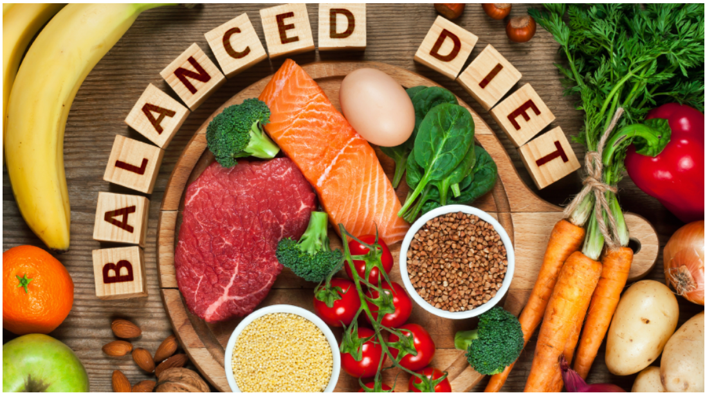
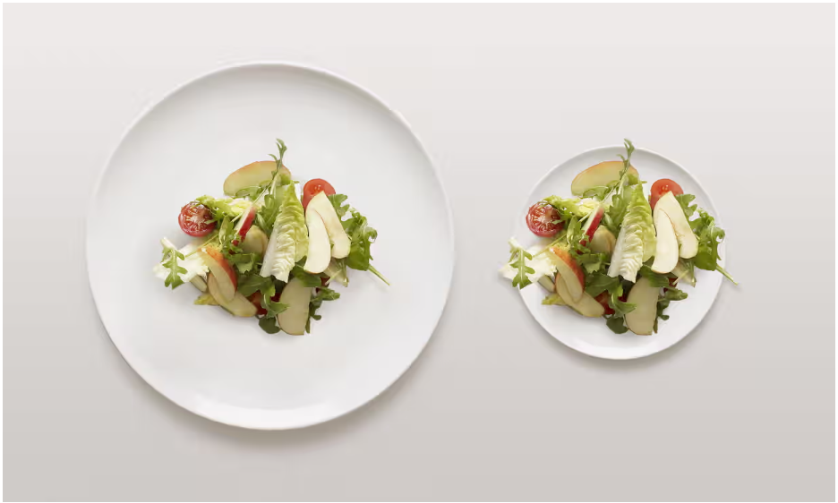
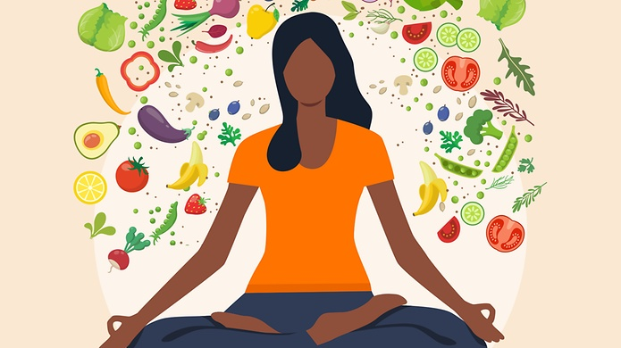

Tips for a Healthy Diet
Stay Hydrated
Drink an adequate amount of water throughout the day.
Consider adding herbal teas or infused water for variety.
Balanced Diet
Include a variety of fruits, vegetables, whole grains, lean proteins, and healthy fats in your meals.
Aim for a colorful plate to ensure a range of nutrients.
Portion Control
Be mindful of portion sizes to avoid overeating.
Use smaller plates to help control portion sizes.
Limit Processed Foods
Minimize the consumption of processed and packaged foods.
Opt for fresh, whole foods whenever possible.
Social Connections
Maintain social connections with friends and family for emotional well-being.
Surround yourself with a supportive community.
Regular Health Check-ups
Schedule regular check-ups with healthcare professionals.
Monitor key health indicators such as blood pressure, cholesterol, and weight.
Manage Stress
Practice stress-reducing activities such as meditation, deep breathing, or yoga.
Take breaks and find time for activities that bring joy.
Limit Added Sugars and Salt
Minimize the intake of foods and beverages high in added sugars.
Be mindful of sodium content and choose low-sodium options.
Healthy Snacking
Choose nutrient-dense snacks like fruits, nuts, and yogurt.
Avoid excessive snacking, and listen to your body's hunger cues.

Regular Physical Activity
Engage in regular exercise, including both cardiovascular and strength training.
Find activities you enjoy to make fitness a part of your routine.
Adequate Sleep
Ensure you get enough quality sleep each night (typically 7-9 hours for adults).
Establish a consistent sleep schedule.
Mindful Eating
Pay attention to what you eat and savor each bite.
Avoid distractions like TV or smartphones during meals.
Limit Alcohol Intake
If you choose to drink alcohol, do so in moderation.
Be aware of the recommended limits for your health.